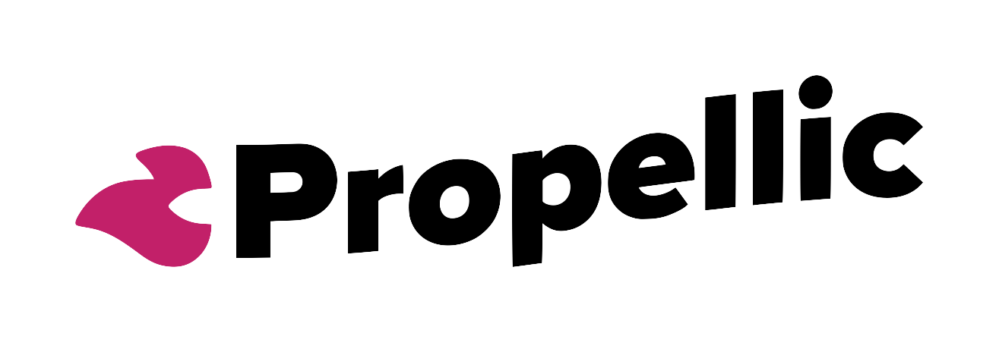

Hackathon · Team 5
Coiled Spring
Opportunity Forecaster
Identify moments where search intent stays high but conversion rates dip — and give clients a data-backed reason to hold spend.
🌀 Built with Python · Streamlit · Google Ads API